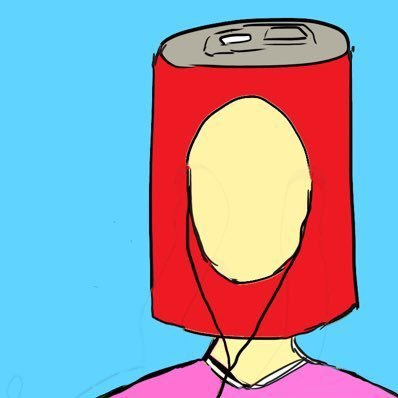

大学生ハガキ職人インタビュー
第2回目ののインタビュー ラジオネーム:ヒルバレーの時計台さん
Q.いつ頃からラジオ聴いていますか？
A.ラジオを聴き始めたのは高校2年生で、その時はSEKAI NO OWARIのセカオワlocks!と、BUMP OF CHICKENのPONTSUKA!!を聴いていました。本格的にメールを送り始めたのは高校3年生の時で、バナナマンのバナナムーンGOLDが最初でした。
Q.ラジオを聴くことになりましたきっかけなどありますか？
A.セカオワとBUMPが元々好きで、ふとラジオをやっていることを知って、聴くようになりました。
Q.ありがとうございます！ヒルバレーの時計台さんはラジオ聴く以外に趣味みたいなことはありますか？
A.サッカー観戦、スノボ、ギター、DTM、音楽ライブに行くこと、古着屋巡り、御朱印集めです。
Q.おしゃれでいいですね！好きなラジオ番組を教えていただけますでしょうか？
A.ありがとうございます！！
好きなラジオ番組はなかなか絞れませんが、しいて3つに絞るとしたら、霜降り明星のオールナイトニッポン（霜降り明星ANN）、相席スタート山添寛のサクラバシ919（山添サクラバシ919）、ぱーてぃーちゃんの絆Nightふぃーばー（絆ナイ）です。
Q.ありがとうございます！ぱーてぃーちゃんのラジオは存じ上げてなかったので聴いてみたいです！ラジオネームの由来などございますか？
A.ラジオネームの由来は、映画Back to the Futureから取りました。映画の物語の舞台が「Hill Valley」という名前の街で、そこにある時計台に雷が落ちるシーンがあるのですが、そこから街の名前と「時計台」をくっつけました。
Q.今までに何通ぐらい読まれたことございますか？
A.最近は数えてないので正確な数は分かりませんが、多分1700通くらいだと思います。
Q.なんてすごい数字！採用率など教えて頂けたりしますか？
A.機種変とかの関係で何通送信したのか覚えてないので、採用率が割り出せないです…すいません…普段はひとつの番組に100通とかは送らなくて、毎回送っても20通とかなので、おそらく採用率は高い方だと思います。霜降り明星ANNだけは、毎週200通ほど送っています。レベルが高すぎてなかなか採用されませんが。
Q.霜降り明星のオールナイトニッポンはやはりすごいですよね！そのなかでも霜降り明星だけは違う印象ですか？
A.霜降り明星ANNはいままで聴いてきたラジオの中でも特に面白くて、コーナーも激強リスナーが集っているしレベルも高いので、採用されると特別に嬉しいですね。
Q.ラジオ番組は何番組ぐらい聴いていますか？
A.ラジオ番組は、毎週欠かさず聴いているのは34番組で、たまに聴くやつとか、月1のやつとかも含めると、53番組ですね。
Q.34番組！基本的にすべての番組にメール送られるかんじですか？
A.聴いている番組には基本的に全てにメールを送っています。その分採用数も増えるって感じです。
Q.1700通のうち番組の内訳など教えていただけますか？
A.現在の番組だとニッポン放送 オールナイトニッポンシリーズで採用されたことがあるのは、
山田裕貴ANNX
長屋晴子ANNX
EXITANNX
cnann
星野源ANN
乃木坂46ANN
ナインティナインANN
霜降り明星ANN
annkw
フワちゃんANN0
ぺこぱANN0
佐久間宣行ANN0
三四郎ANN0
JUNKだと、
fumou954
meganebiiki
bananamoon
とかですかね。現在放送中のオールナイトニッポンシリーズに絞ると、送ったことないのがJO1ANNX、マヂラブANN0ですね。
Q.今までで一番読まれて嬉しかったメール、嬉しかったノベルティなどありますか？
A.嬉しかったメールはたくさんありますが、最近だと菅田将暉ANN復活回での東京ダースーコレクションでの採用が嬉しかったです。嬉しかったノベルティもいろいろあるのですが、King Gnu井口理ANN0で井口さんがお休みされて、King Gnuドラムの勢喜遊さんが代打で出られた時に、アルフォートのコーナーで読まれて、アルフォート10箱届いたのが嬉しかったです。あと伊藤健太郎ANN0でもらった伊藤健太郎さん直筆サイン入りのニッポン放送紙袋も嬉しかったです。
Q.菅田さんの復活ラジオ聴いてました！あそこで読まれる人は限られて人ですよね！メールを読まれるコツなどございますか？
A.リアクションメールだと、読まれている人のメールを聞いて、今日の放送はどういう流れのメールが読まれそうだな、とか、こういうノリが始まりそうだから送ってみるか、とか考えますね。誤字脱字にも気をつけます。コーナーメールだと、いつも読まれている人のメールを参考にしながら、誤字脱字と改行に気をつけながら送ります。最近だとネタ被りやネタパクリがたまに話題になるので、既出のネタじゃないか、Twitterで検索をかけたり、できるだけ被らないように心がけてはいます。あとはとにかく1通でも多くメールを送ってみることですかね。読まれなくて番組を聞かなくなった、みたいな人を何人も見てきているので、まずは読まれるまで送ってみることがいいと思います。
長らくインタビューお付き合いいただきありがとうございました！
こちらこそありがとうございました！

第1回目ののインタビュー ラジオネーム:アルミ缶さん
Q.いつ頃からラジオ聴いていますか？
A.初めてラジオを聴いたのは小学3年生
今のように毎週決まった番組を聴くようになったのは大学1年生からです。
Q.ラジオを聴くきっかけは何ですか？
A.祖父がたまたまラジオの実機をくれたので、勉強中に聴いてみようかなと思ったのがきっかけです。
Q.好きなラジオ番組は何ですか？
A.むかいの喋り方
佐久間宣行のオールナイトニッポン0
四千頭身都築拓紀のサクラバシ919
マヂカルラブリーのオールナイトニッポン0
金曜JUNKバナナムーンGOLD
中でもバナナムーンは1番好きな番組です
Q.ラジオネームの由来はありますか？
A.ありふれた名前でたくさん読まれてたらかっこいいよなぁという、今思うとイタい気持ちでそれっぽい物を探していた時に、たまたまアルミ缶が目についたのが由来です。
Q.同じような質問になってしまうかもしれませんが、週に何番組ぐらい聴いていますか？
A.基本20番組ぐらいです
Q.今までに何通ぐらい読まれたことありますか？
A.だいたい1000通ぐらいです
Q.その中での番組の内訳など教えていただけますか？
A.むかいの喋り方や都築サクラバシ919などの地方でやっている番組が約600通
オールナイトニッポン、オールナイトニッポン0、オールナイトニッポンXが約200通
JUNKが約150通
Podcastなどのネット番組が50通
みたいな感じだと思います
番組単位だと流石に把握しきれてないです笑
Q.今まで読まれて一番嬉しかったメールはありますか？
A.Podcastの「滔々あの夜咄」という番組の、リスナーのメールをもとに物語を作るというコーナーで、自分のメールがその物語の軸になったのが嬉しくて印象に残っています。
Q.一番嬉しかったノベルティはありますか？
A.水曜JUNK山里亮太の不毛な議論でいただいた、山里さんの著書「天才はあきらめた」に山里さんのサインと僕のラジオネームが直筆で書かれているノベルティが1番嬉しかったです。
Q.おそらくご存じないと思うのですが、ミッドナイトスクールという番組の存在は知っていましたか？
A.申し訳ありません。
番組は聴いたことはありません。
ただ、Twitterのアカウントはタイムラインで何度か見かけたことはあるので、存在自体は知ってました。
Q.もしアルミ缶さんが大学生内でラジオをするとしたらどんなラジオにしたいなどありますか？
A.僕だったら、有名なラジオのようにフリートークをしたりという形ではなく、知っている人にしか伝わらない内々のラジオにすると思います。
例えば「昨日佐藤が〜」みたいな、名字だけでも個人名をバンバン出して雑談をしたりといった感じです。
これは有名人にはできないことだと思うので。
Q.最後の質問なのですが、アルミ缶さんがコーナーを作るとしたらどんなコーナーがありますか？
Q.1つ前の回答に繋がる部分もありますが、個人を特定できない範囲で個人名を出しつつ、作り話ではなくあくまで事実であることを前提として「最近あった面白い話」を募集すると思います。
別に面白さは必要ないので「内輪ノリ」を紹介する感じですかね。程度はあるものの、誰しも内輪ノリはあると思うので、ハードルを上げすぎることなく楽しめるんじゃないかなと思います。
貴重なご意見本当にありがとうございます！長らくインタビューにお付き合いいただきありがとうございました。
インタビューありがとうございました！